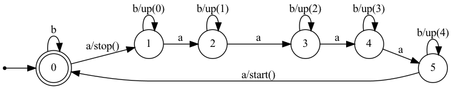

Binaire klok
Contents
13. Binaire klok#
Deze opdracht beschrijft een binaire klok: het display van de microbit geeft de tijd aan, in uren, minuten en seconden. Het display is te klein om dit in normale, decimale cijfers weer te geven. Maar met de LEDjes kun je binaire getallen wel goed weergeven. Deze klok vormt ook een goede oefening in het gebruik van de binaire vorm van getallen.
Het ontwerp van deze klok is gebaseerd op de “binaire” klok in het informatica-lokaal van het Ds. Pierson college in ‘s Hertogenbosch.
We bespreken eerst de manier waarop deze klok de tijd weergeeft. Vervolgens beschrijven we hoe je de tijd instelt. Dit is een voorbeeld in het gebruik van eindige automaten. En tenslotte geven we de complete code van het programma, met een korte toelichting.
13.1. Weergave van de tijd#
Kolom 0 (links) geeft de uren aan, als binair getal (0..23). Kolom 1 en 2 geven de minuten aan: kolom 1 de tientallen (0..5), als binair getal; kolom 2 de decimale eenheden (0..9), ook als binair getal. Op dezelfde manier geven kolom 3 en 4 de seconden aan.
Het is een beetje een vreemde combinatie van decimaal en binair (en 60-tallig); maar met een beetje oefening kun je deze klok vrij snel aflezen. Je kunt de minuten en seconden ook volledig binair weergeven, maar dan heb je ook voor elk twee kolommen nodig. (opdracht) Die variant is wat lastiger af te lezen.
(Ik weet nog niet hoe we over deze klok vragen kunnen formuleren, en welke uitbreidingen mogelijk zijn.)
13.2. Instellen van de tijd#
Met de knoppen A en B stel je de tijd in. Knop A stopt de klok, en selecteert daarna steeds de volgende kolom. Na kolom 4 start de klok weer. Knop B hoogt de waarde in de geselecteerde kolom op, waarbij deze waarde “rond telt”. Voor de kolom van de “eerste decimaal” van de minuten betekent dit dat na 5 weer 0 komt; voor de tweede decimaal komt na 9 weer 0.
Als een kolom geselecteerd is, knippert het bovenste LEDje in die kolom.
Het volgende toestandsdiagram beschrijft het gebruik van deze knoppen:

Fig. 13.4 Instellen van de tijd met knoppen A en B#
13.2.1. Automaat in het programma#
In het programma ziet deze automaat er als volgt uit:
state = 0
def button_a_handler():
global state
if state == 0:
state = 1
stop()
elif state == 1:
state = 2
elif state == 2:
state = 3
elif state == 3:
state = 4
elif state == 4:
state = 5
elif state == 5:
state = 0
start()
def button_b_handler():
global state
if state > 0:
up(state-1)
while True:
# ...
if button_a.was_pressed():
button_a_handler()
if button_b.was_pressed():
button_b_handler()
Opmerking. De code voor button_a_handler kun je compacter schrijven, maar we hebben de vorm gebruikt die je krijgt als je een toestandsdiagram volgens de regels omzet in een Python-programma.
13.3. Het programma#
We geven hieronder de code van het totale programma.
# Imports go at the top
from microbit import *
from time import ticks_ms, ticks_add, ticks_diff
hours, minutes, seconds = 0, 0, 0
def display_binary(col, nr):
for i in range(5):
display.set_pixel(col, 4-i, 9 *(nr % 2) )
nr = nr // 2
def display_time():
global hours, minutes, seconds
display_binary(4, seconds % 10)
display_binary(3, seconds // 10)
display_binary(2, minutes % 10)
display_binary(1, minutes // 10)
display_binary(0, hours)
def next_second():
global hours, minutes, seconds
seconds = seconds + 1
if seconds == 60:
seconds = 0
minutes = minutes + 1
if minutes == 60:
minutes = 0
hours = (hours + 1) % 24
display_time()
def up_lastdigit(num):
return (num // 10) * 10 + (num + 1) % 10
def up(col):
global hours, minutes, seconds
if col == 0:
hours = (hours + 1) % 24
elif col == 1:
minutes = (minutes + 10) % 60
elif col == 2:
minutes = up_lastdigit(minutes)
elif col == 3:
seconds = (seconds + 10) % 60
elif col == 4:
seconds = up_lastdigit(seconds)
display_time()
state = 0
running = False
def stop():
global running
running = False
def start():
global running, deadline
running = True
deadline = ticks_add(deadline, 1000)
def button_a_handler():
global state
if state == 0:
state = 1
stop()
elif state == 1:
state = 2
elif state == 2:
state = 3
elif state == 3:
state = 4
elif state == 4:
state = 5
elif state == 5:
state = 0
start()
def button_b_handler():
global state
if state > 0:
up(state-1)
deadline = ticks_ms() # start now
hours, minutes, seconds = 0, 0, 0
blink = False
display_time()
start()
while True:
if ticks_diff(ticks_ms(), deadline) > 0:
if running:
next_second()
deadline = ticks_add(deadline, 1000)
else:
if blink:
display.set_pixel(state-1, 0, 9)
else:
display.set_pixel(state-1, 0, 0)
blink = not blink
deadline = ticks_add(deadline, 200)
if button_a.was_pressed():
button_a_handler()
if button_b.was_pressed():
button_b_handler()
sleep(10)
Opmerkingen
voor de klok gebruiken we een software-timer die elke secone (1000 ms) afloopt; zie XXX
door de
sleep(10)is de processor het grootste deel van de tijd in de slaap-toestand; hiermee kan het energieverbruik van de processor verminderd worden. (Het display gebruikt nog wel vrij veel energie, maar met een “e-ink” display is ook dat minimaal.dezelfde timer wordt gebruikt voor de klok en voor het knipperen van de LEDs als de klok uitstaat.
LED-niveau 0 betekent uit, LED-niveau 9 betekent volledig aan.
voor de tijd gebruiken we 3 variabelen:
hours, minutes, seconds, omdat deze directer overeenkomen met de weergave op het display dan een enkele seconden-teller.een alternatief is het gebruik van 5 variabelen, één voor elke kolom in het display. Dat maakt het ophogen van de tijd wat complexer, maar het weergeven en aanpassen van de tijd (via knop B) wat eenvoudiger.
opdracht: werk dat zelf uit.
opdracht: pas de knipper-frequentie van de bovenste LED in de geselecteerde kolom aan.
opdracht: de huidige klok is een 24-uurs klok. Een 12-uurs klok met een LED voor ‘s morgens (AM) en ‘s middags (PM) is waarschijnlijk gemakkelijker af te lezen. Maak deze variant.